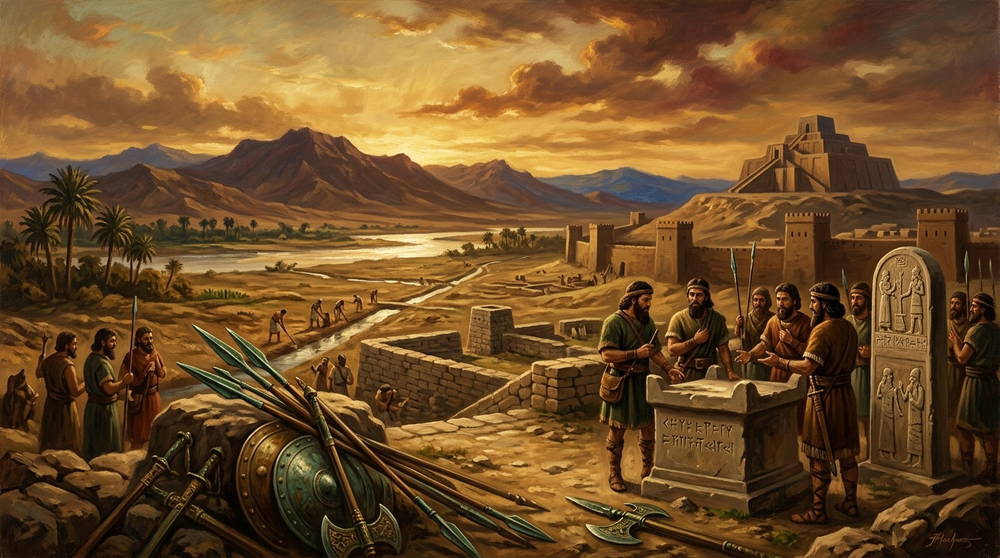

How Men Gained World Domination Over Women
Physical Realities, Institutionalised Hierarchy, and the Deconstruction of Patriarchal Power.

To learn of how men gained world domination over women is not a tale of divine decree, biological destiny or cosmic intention. No deity ever commanded men to rule, conquer or kill. No sacred text contains a universal mandate for male supremacy. The truth is far more human, far more constructed, far more brutal. The monopoly of male power was not given it was taken. It emerged slowly, through the convergence of physical realities, early social organisation, and the gradual cementing of hierarchy into culture, religion and law. It hardened over millennia until it appeared natural, inevitable, unquestionable but its origins were anything but.
In prehistoric societies, physical strength mattered more than anything else. Survival depended on hunting, defence and labour. Men, on average, possessed greater body strength, and early human groups leaned on that strength for protection and resource gathering.
This physical advantage became a social advantage. Over generations, it hardened into authority. Authority hardened into hierarchy. Hierarchy hardened into patriarchy. Archaeological evidence from early societies—Mesopotamia, the Indus Valley, ancient China—shows the pattern. When land became property, and property required defence, the individuals who controlled weapons controlled society. Those individuals were overwhelmingly men. (Ian Morris, War! What Is It Good For?, Princeton University Press, 2014; Steven Pinker, The Better Angels of Our Nature, Viking, 2011)
“The monopoly of male power was not given—it was taken. And what was taken can be taken back.”
— Trevor Swistchew, On the Construction of Patriarchy
Once men controlled the tools of violence they controlled the means of decision-making. Once they controlled decision‑making, they controlled culture. Once they controlled culture, they controlled the stories societies told about themselves. Those stories glorified male aggression, male conquest, male dominance. They turned violence into honour, war into destiny, destruction into legacy. They taught boys that power comes from force and taught girls that obedience is survival. They created a world where male violence was not only permitted but celebrated. Anthropological studies of early state formation show how patriarchal kinship systems emerged alongside property inheritance, binding male authority to economic control and female subordination to reproductive value. (Gerda Lerner, The Creation of Patriarchy, Oxford University Press, 1986.)
Religion did not create patriarchy; patriarchy shaped religion. The earliest priesthoods were male because the earliest political elites were male. The earliest laws were written by men because writing itself was controlled by male scribes. The earliest gods of war, sky and kingship were male because the societies that worshipped them were already structured around male dominance. When the Code of Hammurabi formalised property rights and marital control it did so in a world where men already held the reins of power. When Greek philosophers wrote about virtue, they wrote for men. When Roman law defined citizenship it defined it around male authority. When medieval Europe fused monarchy with divine right, it fused male rule with cosmic legitimacy. None of this was inevitable. All of it was constructed.
War accelerated the process. Every empire—Akkadian, Egyptian, Persian, Greek, Roman, Mongol, Ottoman, British—was built through organised male violence. Men led armies, commanded legions, men forged weapons, men conquered territories, men enslaved populations. Women were excluded from the machinery of war not because they lacked capacity but because the machinery itself was designed to reinforce male hierarchy. The historian Yuval Noah Harari notes that war became the central engine of state formation, and because men monopolised war, they monopolised the state. (Yuval Noah Harari, Sapiens, Harvill Secker, 2014.)
This is the historical pattern exposed: male domination did not emerge from nature it emerged from systems built by violent men. Systems that rewarded aggression, punished vulnerability, glorified conquest, and treated domination as proof of worth. Systems that taught men to fear weakness more than cruelty. Systems that taught men to equate identity with control. Systems that taught men that the world belongs to them and that they must defend that ownership at any cost.
Yet because these systems were constructed, they can be dismantled. The modern world has already begun to fracture the foundations of male supremacy. Universal education, democratic governance, feminist movements, reproductive autonomy, legal equality, and global human rights frameworks have all chipped away at the ancient architecture of patriarchy. The decline of interstate war in the late twentieth century—documented extensively by political scientists such as Joshua Goldstein—shows that violence is not destiny but design. (Joshua S. Goldstein, War and Gender, Cambridge University Press, 2001.)
Nations are recent constructs. Borders are political fictions. Flags are symbols of imagined communities built through violence. None of them existed in the prehistoric world. All of them were created by men who sought to bind populations to their authority. Benedict Anderson’s seminal work Imagined Communities demonstrates how nationalism is a modern invention, not an eternal truth. (Benedict Anderson, Imagined Communities, Verso, 1983.)
The historical pattern of male violence must be exposed—not to condemn men as a biological class, but to dismantle the systems that taught men to equate power with domination. Peace will not come from hating men it will come from exposing the machinery that shaped men into instruments of violence.
The monopoly of male power was not given it was taken. And what was taken can be taken back.
The Construction & Dismantling of Patriarchal Hegemony
Explore the empirical research, anthropological milestones, and sociological literature underlying Trevor Swistchew’s analysis. This dossier details the material shift from foraging to private property, the institutionalisation of male scribal and legal authority, and the modern mechanics of deconstruction.
From Biomass to Borders: The Material Origins of Weapon Monopolies
Swistchew traces the root of male domination not to divine intent or innate cosmic destiny, but to the material evolution of prehistoric subsistence and warfare:
In hunter-gatherer bands, mobile foraging rendered private land ownership impossible. The Neolithic agricultural revolution fixed human populations to cultivated alluvial plains, creating accumulated food stores that required physical fortifications, defensive armies, and dedicated warrior castes.
Average differences in upper-body musculature, while minor in egalitarian social contexts, became decisive when weapons and physical coercion determined territory. Those who commanded metallurgy and weapons commanded community councils, gradually transforming protection into domestic extraction.
Academic Works & Primary Theoretical Citations
The following peer-reviewed works and foundational treatises are cited directly by Trevor Swistchew in support of the historical, anthropological, and political arguments presented in this essay:
War! What Is It Good For? Conflict and the Progress of Civilization from Primates to Robots. Princeton University Press.
The Better Angels of Our Nature: Why Violence Has Declined. Viking / Penguin Books.
The Creation of Patriarchy. Women and History, Vol. 1. Oxford University Press.
Sapiens: A Brief History of Humankind. Harvill Secker.
War and Gender: How Gender Shapes the War System and Vice Versa. Cambridge University Press.
Imagined Communities: Reflections on the Origin and Spread of Nationalism. Verso.